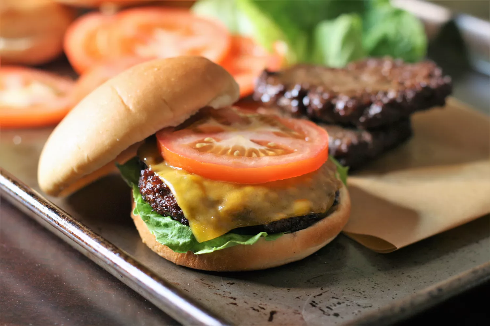

Hamburger

Description
When it's too cold to grill and you're craving a juicy burger, use your
air fryer! The butter and bouillon mixture gives the patties a dark
grilled color and deep beefy flavor. Add your favorite seasonings, if
desired, but these are delicious as is! If you'd like to add cheese, turn
off the air fryer once the patties are done and let the residual heat melt
the cheese. Make sure you use cold meat, straight from the fridge, for
best results.
Ingredients
- 1 pound 80% lean ground beef
- 2 tablespoons melted butter
- 1 tablespoon beef bas (such as Better than Bouillon
- freshly ground black pepper to taste
Steps
- Preheat an air fryer to 400 degrees F (195 degrees C).
-
Form beef into 4 patties, approximately 3/4 inches thick and 4 1/2
inches in diameter. Make the patties slightli bigger than the buns to
allow for shrinkage.
-
WHisk together warm melted butter and beef soup base in a small bow.
Brush lightly onto both sides of patties and season with pepper. Set
patties into the air fryer basket. Depending on the size of your air
fryer, you may need to cook them in batches.
-
Ait-fry patties for 7 minutes, flipping halfway through, for medium
doneness. For well done, air-fry for an additional 2 minutes.
Go Back